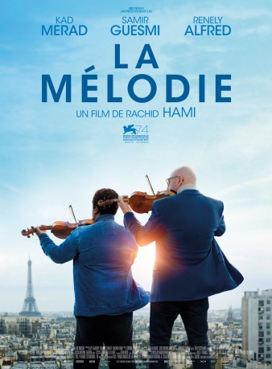

#8717 La Mélodie - Der Klang von Paris
Alternativ: La Melodie
 
 IMDB-Wertung: 6.5 / 10
IMDB-Wertung: 6.5 / 10  Metascore: 0
Metascore: 0 
Simon Daoud übernimmt eine neue Stelle als Geigenlehrer in der Orchesterklasse von Farid Brahimi an einer Schule in einem sozial benachteiligten Vorort von Paris. Mit seinen strengen Methoden kommt er bei den Schülern, die musikalisch kaum vorgebildet sind, schlecht an. Immerhin entpuppt sich Arnold als Talent. Simon fördert ihn und versucht bald auch, die anderen auf spielerische Weise für einen Auftritt in der Philharmonie zu begeistern und vorzubereiten.
Jahr: 2017
Dauer: 102 Minuten
FSK: 0
Land: Frankreich Studio: Prokino FilmverleihTonspuren:
Untertitel:
Auflösung: 1080p (1920x800) Größe: 3973 MB
Genre: Drama
Regisseur: Randy Moore
Drehbuch: Ann Cherkis
Soundtrack: Bruno Coulais
Darsteller:
 Kad Merad als Simon Daoud
Kad Merad als Simon Daoud Samir Guesmi als Farid Brahimi
Samir Guesmi als Farid Brahimi Slimane Dazi als Le père de Samir
Slimane Dazi als Le père de Samir- Claudine Vinasithamby als Umi
- Corinne Marchand als La mère de Simon
- Sofiene Mamdi als Radouan, le père de Mehdi
 Mounir Margoum als Un parent d'élève
Mounir Margoum als Un parent d'élève- Alfred Renely als Arnold
- Jean-Luc Vincent als Laurent
- Tatiana Rojo als La mère d'Arnold
- Mathieu Spinosi als Chef d'orchestre Julien
- Zakaria-Tayeb Lazab als Samir
- Youssouf Gueye als Abou
- Mouctar Diawara als Mouctar
- Shirel Nataf als Yaël
- Anaïs Meiringer als Lola
- Amine Chir als Mehdi
- Idaya Haddouche als Sabrina
- Nassima Bourhetta als Nassima
- Cybèlagena Adiguna als
- Fanta Kebe als Kadi
- Matthieu Mazliak als Matthieu
- Camila Sarapuk als
- Marc Brunet als Michel Peretti, le proviseur
- Ginger Romàn als Marie Pagès
- Catherine Pagès als La violoncelliste
- Souhade Temimi als Djamila, la mère de Samir
- Zakaria El Ahmadi als Khader, le père de Sabrina
 Jana Bittnerova als La mère de Yaël
Jana Bittnerova als La mère de Yaël
Datei: X:\2017(G-M)\La Mélodie - Der Klang von Paris (2017, FSK0, 1920x800).mkv seit 25.04.2018
Festplatte: HD 2017(A-Z)-2018(A-F)
 Es gibt insgesamt 148 Filme in der Gruppe '2017(G-M)'
Es gibt insgesamt 148 Filme in der Gruppe '2017(G-M)'